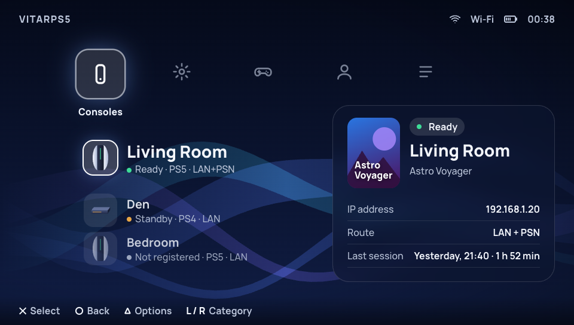

Direction 1
XMB “Remote Play Bar”
A horizontal row of categories (Consoles, Settings, Controller, Profile, Logs) with a vertical list under the chosen one, over ribbons tinted by the time of day. Settings become items with a value panel on the right, and Triangle slides in an options panel. It is the most native to a controller and the lightest to draw.
Pros
- Fits D-pad use perfectly: left/right category, up/down item.
- Lightest: ribbons are 4 draw calls, no big textures (about 4 MB).
- One pattern covers all five areas, so new screens are cheap.
- The most distinctive "console" feel, and the biggest visual break from today.
Cons
- Lists, not browsing: no big moment for the console or game.
- Home is about 88 draw calls as mocked, just over the 80 target.
- Fifteen settings in one long list is functional, not delightful.
- Ribbons need a CPU vertex update each frame.